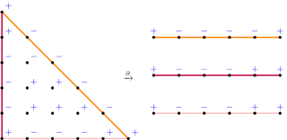

Divisors and Multiplicities under tropical and signed shadows
Trevor Gunn
Part I:
Divisors on Metric Graphs
Divisors, line bundles, linear systems, etc. are connected to projective embeddings.
E.g. $\P^1 \xrightarrow{\O(3)} \P^3$ \[[x:y] \mapsto [x^3 : x^2y : xy^2 : y^3]\]
Divisors, line bundles, linear systems, etc. are connected to projective embeddings.
E.g. $\P^1 \xrightarrow{\O(3)} \P^3$ \[[x:y] \mapsto [x^3 : x^2y : xy^2 : y^3]\]
Can embed graphs in $\R^3$
putting vertices on the TC
$p^3 + px - 2py - 3px^2 + 2xy + py^2 - 2p^3x^3 + px^2y + pxy^2 - p^3y^3 \in \Q_p[x,y]$

Newton polytope/complex
and associated tropical curve
The metric graph associated to a tropicalization is called a skeleton

Lattice length metric
Tropical balancing condition \[ \sum \omega_e \vec{v}_e = \vec0 \]
Can also contract leaf vertices to obtain other skeleta
Going backwards


Going backwards
Baker-Rabinoff
There exist coordinate functions, which lift, such that the resulting tropicalization is an isometry (tropical weights are $1$) on a fixed skeleton.
Baker-Rabinoff
Fixed skeleton—rays have positive weights
G-Jell
There exist coordinate functions, which lift, such that the resulting tropicalization is an isometry on the extended skeleton (considering all the rays).

Components of $\X_{\F_p}$ give valuations on $\X$
Dual graph of $\X_{\F_p}$ is a skeleton
If $f$ is a meromorphic function on $\X^{\mathrm{an}}$ then \[ (x, |\cdot|) \mapsto \log |f(x)| \] is a piecewise linear function.
Part II:
Multiplicities
Tropical multiplicities
Newton, Baker-Lorscheid, G
# of roots with valuation $\gamma$ equals
the width of the edge of slope $-\gamma$
Enriched Multiplicities

G (Combining Newton and Descartes)
# of pos. roots with valuation $\gamma$ equals
the number of sign changes in the edge of slope $-\gamma$
Descartes' Rule
\[ y = 1 - 3x - 2x^2 + x^5 \]
\[ +, -, -, \textcolor{#CCC}0, \textcolor{#CCC}0, + \]
Multivariate Descartes Problem
- Given a system of equations $f_1 = \dots = f_n = 0$,
- with just information about the signs of the coefficients,
- what can we say about the signs of $V(f_1,\dots,f_n)$?
- Lower bound on # of positive roots by Itenberg-Roy using patchworking (combinatorial)
- Their lower bound is not sharp (example by Li-Wang)
Arithmetic in the Shadows
\[ y = 1 - 3x - 2x^2 + x^5 \]
\[ +, -, -, \textcolor{#CCC}0, \textcolor{#CCC}0, + \]
\[ \begin{aligned} (1 - x)(1 &- x - x^2 - x^3 - x^4) \\ = 1 &- x - x^2 - x^3 - x^4 \\ &- x + x^2 + x^3 + x^4 + x^5 \\ \ni 1 &-x - x^2 \hspace{1.54cm} +x^5 \end {aligned} \]
Baker-Lorscheid Multiplicities
Descartes
Number of sign changes (combinatorial)
Baker-Lorscheid
Maximum number of times one can factor out $(x - 1)$ using sign arithmetic
Baker-Lorscheid Multiplicities
Newton
Width of the edge with slope $-\gamma$ (combinatorial)
Baker-Lorscheid
Maximum number of times one can factor out $(x + \gamma)$ using tropical arithmetic
Tropical Hyperfield (min/plus arithmetic)
\[\T = \R \cup \{\infty\}\] \[ x \cdot_\T y = x +_\R y \quad \text{(mult. is add.)} \] \[ x_0 \in x_1 \boxplus \dots \boxplus x_n \iff \min\{x_0,\dots,x_n\} \text{ occurs twice} \]
Geometric Multiplicities

Number of copies of a line in a tropical cycle
(Can be adapted to include signs)
If a subdivision isn't given, we can impose one
Boundary Multiplicity
\[ \bmult = \min_i \mult|_{x_i = 0} \]
Systems of Equations
(Putting it all together)
Li-Wang
$a, b, r, s, t > 0$
\[ \begin{cases} f\coloneqq 1+ax-bx = 0\\ g\coloneqq 1+rx^3-sy^3-tx^3y^3=0 \end{cases} \]
Has $3$ positive roots for some choice of coefficients
Itenberg-Roy predict $2$
\[ \begin{cases} f\coloneqq 1+ax-bx = 0\\ g\coloneqq 1+rx^3-sy^3-tx^3y^3=0 \end{cases} \]
Mixed sparse resultant: \[ R \propto \prod_{p \in V(f,g)} (p_1 u + p_2 v + p_3 w) \]
ring R = (0,(u,v,a,b,r,s,t)),(x,y),dp;
ideal I = 1+ux+vy, 1+ax-by, 1+rx3-sy3-tx3y3;
det(mpresmat(I,0));
\[ \begin{cases} f\coloneqq 1+ax-bx = 0\\ g\coloneqq 1+rx^3-sy^3-tx^3y^3=0 \end{cases} \]
Mixed sparse resultant: \[ R \propto \prod_{p \in V(f,g)} (p_1 u + p_2 v + p_3 w) \]
\[\downarrow\]
\[ \bmult R \le 3 \]
Other Highlights
G
For univariate polys, $\mult f = \mult(\In f)$
G
$\sum \mult f \le \deg f$ for stringent hyperfields
meaning: $a \boxplus b = \{c\}$ if $0 \notin a \boxplus b$
Gross-G
New proof of Itenberg-Roy's lower bound using resultants